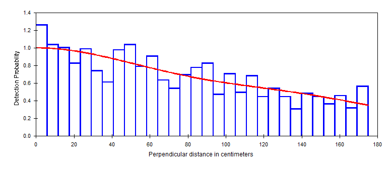

Analysis with the use of multipliers
Distance for Windows exercise Solution
Sika deer solution
We did not perform a comprehensive examination of fitting a detection function to the pellet groups detected. However, as a general practice, we have truncated the most distant 10% pellet groups. Have a look at Deer pellets solution.zip
For management purposes, we would like to produce an estimate of the number of deer inhabiting each woodlot. In scrutinizing the data set, we see there is considerable variability in the number of pellet groups detected within each woodlot, and in some woodlots we detected as few as 4 pellet groups. Hence we cannot reliably estimate woodlot-specific detection functions. Consequently, we will pool data across woodlots to derive a global detection function. To produce woodlot-specific density estimates, we combine woodlot-specific encounter rates with the global detection function.
The global detection function

| Block | Encounter rate | CV(n/L) |
|---|---|---|
| A | 715.88 | 17.25 |
| B | 360.00 | 22.99 |
| C | 37.778 | 21.51 |
| E | 35.294 | 49.26 |
| F | 145.00 | 0.00 |
| G | 80.000 | 67.70 |
| H | 15.000 | 0.00 |
| J | 70.000 | 0.00 |
Note that blocks F, H, and J have but a single transect placed in them. As a consequence, it is not possible to empirically compute a variance for encounter rate in those woodlots.
Results
Produce an overall estimate of density as mean of woodland-specific densities weighted by the effort allocated within each woodlot.
With considerable effort allocated in woodlot A, where deer density is high, the overall estimate of density is between the estimated density in woodlot A of 74 deer per km-2 and the lower densities in the remaining woodlots.
Make special note of the components of variance (contribution of detection function, encounter rate, decay rate, and what happened to defecation rate component?) in each of the strata.
Because we now have uncertainty associated not only with the detection function and encounter rate, but also decay rate we are presented with these component of variability for each of the strata for which we requested estimates of density.
In woodlot A, there were 13 transects on which over 1200 pellet groups were detected; uncertainty in the estimated density was 19.0% and the variance components were apportioned as
Component Percentages of Var(D)
| Detection probability | Encounter rate | Decay rate |
|---|---|---|
| 4.0 | 79.1 | 16.9 |
whereas woodlot E had 5 transects, but only 30 detections overall (resulting in a CV of 48%)
| Detection probability | Encounter rate | Decay rate |
|---|---|---|
| 0.6 | 96.9 | 2.5 |
In woodlot F, were only a single transect was placed, the CV of density was 8.9% with the allocation being
| Detection probability | Encounter rate | Decay rate |
|---|---|---|
| 19.1 | 0.0 | 80.9 |
Do you trust this assessment of uncertainty in the density of deer in this woodlot? We are missing a component of variation because we were negligent in placing only a single transect in this woodlot, and so are left to assume there is no variability in encounter rate in this woodlot.
By the same token, we are left to assume there is no variability in defecation rates between deer because we have no measure of uncertainty in this facet of our assessment of deer densities.
Wren cue count survey
Fitting of the three key function models proceeds and the Results Browser table is shown below:
| Name | # params | Delta AIC | AIC | ESW/EDR | D | D LCL | D UCL | D CV |
|---|---|---|---|---|---|---|---|---|
| hazard rate | 2 | 0 | 6621.522 | 65.6 | 1.212 | 0.821 | 1.789 | 0.200 |
| half normal | 5 | 2.47 | 6623.997 | 60.5 | 1.428 | 0.558 | 3.651 | 0.507 |
| uniform cosine | 3 | 15.40 | 6636.925 | 68.0 | 1.130 | 0.662 | 1.928 | 0.278 |
Compare the density estimate from the Distance for Windows output with the table of estimates provide in Buckland (2006):